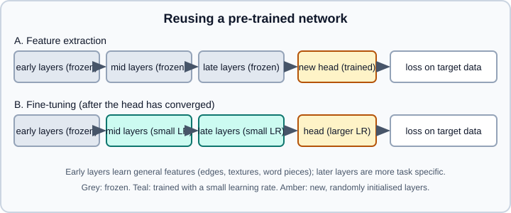

Transfer Learning, Fine-Tuning & Foundation Models
|
This content was generated with the assistance of AI and should be verified against the official documentation before being relied on in production. |
Training a deep network from scratch needs a lot of data and compute. Transfer learning avoids most of both: start from a network that was already trained on a large, general task, and adapt it to yours. A model pre-trained on millions of images has already learned edges, textures and object parts; one pre-trained on trillions of tokens has already learned grammar, facts and some reasoning. Adapting it usually needs far less data, trains in minutes to hours instead of days to weeks, and almost always beats training from scratch when the target dataset is small or medium. Today most practical deep learning, from image classifiers to language assistants, starts from a pre-trained foundation model.
The code targets Python 3.13, PyTorch 2.15 with torchvision 0.29, and TensorFlow 2.21 with Keras 3.15. Versions and the status of the cited APIs were checked on 2026-10-30. The PyTorch and Keras examples were run on Python 3.13 with PyTorch 2.15 and torchvision 0.29.2 (CPU) and Keras 3.15 on TensorFlow 2.21 on 2026-11-01, on a small image folder with fewer epochs. Background: Convolutional Neural Networks, Training Deep Networks, Generalization & Regularization and Optimizers & Learning Rate Schedules.
Why transfer works
The early layers of a convolutional network trained on natural images learn generic features (edges, colour blobs, textures); later layers combine them into increasingly task-specific ones (object parts, then whole objects). The generic features are useful for almost any other visual task, so they can be reused. Language models show the same pattern: lower layers capture syntax and word senses, higher layers capture task-specific behaviour. This is representation learning at work, see Embeddings & Representation Learning.
Transfer is not guaranteed to help. It works best when the source task is broad and the target task is related; it can fail or even hurt (negative transfer) when the domains differ greatly, for example ImageNet-pre-trained features applied to medical scans or spectrograms, although even then pre-training often still beats random initialisation.
The two basic strategies

Feature extraction keeps the pre-trained network (the backbone) frozen and uses it as a fixed feature extractor. Only a new head (for example a linear classifier) is trained on top. It is fast and cheap, needs little data, and cannot damage the pre-trained weights. A variant extracts the features once, stores them, and trains any model (including a scikit-learn one) on them.
Fine-tuning also updates some or all backbone layers, usually with a much smaller learning rate than the head. It can reach higher accuracy, especially when the target data is large or differs from the source, but it needs more data and care, and it risks overfitting and catastrophic forgetting (losing the general knowledge that made the model valuable).
A standard recipe combines them:
-
Replace the head with a new one sized for your task.
-
Freeze the backbone and train the head until it converges (feature extraction).
-
Unfreeze the top backbone layers (or all of them) and continue training with a much lower learning rate (fine-tuning).
A rough rule of thumb for choosing:
| Target dataset | Similar to the source | Different from the source |
|---|---|---|
Small |
Feature extraction (a linear head on frozen features) |
Feature extraction from earlier layers, strong augmentation, consider a model pre-trained on a closer domain |
Large |
Fine-tune the whole network at a small learning rate |
Fine-tune more layers, or all, possibly for longer; pre-training still usually beats random initialisation |
Preparing the data
The input pipeline must match what the model was pre-trained with: the same image size, channel order, value range and normalisation statistics. A mismatch silently degrades accuracy. In torchvision each weights enum carries its own preprocessing: weights.transforms() returns the right transform. In Keras each application model documents its expected input; some (EfficientNetV2, for example) include the rescaling layer inside the model and expect raw pixel values in [0, 255], while others expect a model-specific preprocess_input. Check the page for the model you load.
Augmentation (random crops, flips, colour jitter) is the cheapest way to reduce overfitting on a small dataset; apply it to the training split only.
PyTorch: feature extraction and fine-tuning
Modern torchvision selects pre-trained weights with a weights= argument and an enum. The old pretrained=True flag is deprecated, and older books that use it, or that wrap tensors in Variable, need updating.
import torch
from torch import nn
from torch.utils.data import DataLoader
from torchvision import datasets
from torchvision.models import resnet50, ResNet50_Weights
def run_epoch(model, loader, criterion, opt, device, train: bool):
# the frozen backbone stays in eval mode so BatchNorm statistics are not updated
model.train(train)
if train:
for name, m in model.named_children():
if name != "fc":
m.eval()
correct = total = 0
with torch.set_grad_enabled(train):
for x, y in loader:
x, y = x.to(device), y.to(device)
logits = model(x)
loss = criterion(logits, y)
if train:
opt.zero_grad()
loss.backward()
opt.step()
correct += (logits.argmax(1) == y).sum().item()
total += y.size(0)
return correct / total
def main():
device = torch.accelerator.current_accelerator() or torch.device("cpu")
weights = ResNet50_Weights.DEFAULT # best available weights
preprocess = weights.transforms() # resize, crop, scale, normalise as in pre-training
# a folder of images: data/train/<class_name>/*.jpg and data/val/<class_name>/*.jpg
train_ds = datasets.ImageFolder("data/train", transform=preprocess)
val_ds = datasets.ImageFolder("data/val", transform=preprocess)
train_dl = DataLoader(train_ds, batch_size=32, shuffle=True, num_workers=4)
val_dl = DataLoader(val_ds, batch_size=64, num_workers=4)
model = resnet50(weights=weights)
# 1) feature extraction: freeze the backbone, replace the head
for p in model.parameters():
p.requires_grad = False
model.fc = nn.Linear(model.fc.in_features, len(train_ds.classes)) # new layers are trainable
model = model.to(device)
criterion = nn.CrossEntropyLoss()
opt = torch.optim.AdamW(model.fc.parameters(), lr=1e-3)
for epoch in range(5):
train_acc = run_epoch(model, train_dl, criterion, opt, device, True)
val_acc = run_epoch(model, val_dl, criterion, opt, device, False)
print("head only", epoch, train_acc, val_acc)
# 2) fine-tuning: unfreeze the last block, use a smaller learning rate for the backbone
for p in model.layer4.parameters():
p.requires_grad = True
opt = torch.optim.AdamW(
[
{"params": model.layer4.parameters(), "lr": 1e-5}, # pre-trained: small steps
{"params": model.fc.parameters(), "lr": 1e-4}, # new head: larger steps
]
)
for epoch in range(5):
train_acc = run_epoch(model, train_dl, criterion, opt, device, True)
val_acc = run_epoch(model, val_dl, criterion, opt, device, False)
print("fine-tune", epoch, train_acc, val_acc)
# Save only the weights (a state_dict), not the whole pickled model
torch.save(model.state_dict(), "resnet50_finetuned.pt")
# The guard is required when DataLoader workers are started with "spawn" (the default on macOS and Windows)
if __name__ == "__main__":
main()Source: PyTorch tutorials: Transfer Learning for Computer Vision and torchvision: Models and pre-trained weights.
The run_epoch helper in fine-tuning mode keeps the whole backbone except fc in evaluation mode. That is right for the feature-extraction phase, but when you unfreeze layer4 you should also put it back in training mode if you want its batch-normalisation statistics to adapt; with small batches, leaving them frozen is often safer. Decide deliberately.
Loading the saved weights later: create the model, replace fc with the same new head, and call model.load_state_dict(torch.load("resnet50_finetuned.pt")). Since PyTorch 2.6 torch.load defaults to weights_only=True, which accepts a state dict of tensors and rejects arbitrary pickled objects. Code from older books that saved the entire model with torch.save(model) and reloaded it with torch.load(path) now fails for that reason; save and load state_dict instead, and only set weights_only=False for files you trust completely.
Keras: feature extraction and fine-tuning
Keras 3 exposes the same idea through keras.applications and the trainable attribute.
import keras
IMG = (224, 224)
train_ds = keras.utils.image_dataset_from_directory(
"data/train", image_size=IMG, batch_size=32
)
val_ds = keras.utils.image_dataset_from_directory(
"data/val", image_size=IMG, batch_size=32
)
n_classes = len(train_ds.class_names)
augment = keras.Sequential([keras.layers.RandomFlip("horizontal"), keras.layers.RandomRotation(0.1)])
base = keras.applications.EfficientNetV2B0(
include_top=False, weights="imagenet", input_shape=IMG + (3,), pooling="avg"
)
base.trainable = False # feature extraction
inputs = keras.Input(shape=IMG + (3,))
x = augment(inputs) # augmentation is active only in training
x = base(x, training=False) # keep BatchNorm layers in inference mode
x = keras.layers.Dropout(0.2)(x)
outputs = keras.layers.Dense(n_classes, activation="softmax")(x)
model = keras.Model(inputs, outputs)
model.compile(
optimizer=keras.optimizers.Adam(1e-3),
loss="sparse_categorical_crossentropy",
metrics=["accuracy"],
)
model.fit(train_ds, validation_data=val_ds, epochs=5)
# fine-tuning: unfreeze the base (or only its top layers), recompile with a low learning rate
base.trainable = True
for layer in base.layers[:-30]: # keep all but the last 30 layers frozen
layer.trainable = False
model.compile(
optimizer=keras.optimizers.Adam(1e-5),
loss="sparse_categorical_crossentropy",
metrics=["accuracy"],
)
model.fit(train_ds, validation_data=val_ds, epochs=5)
model.save("flowers_finetuned.keras") # Keras 3 native formatThree rules from the Keras guide matter. First, after changing any trainable flag you must call compile() again for the change to take effect. Second, call the frozen base with training=False so batch-normalisation layers run in inference mode; in Keras, setting trainable = False on a BatchNormalization layer also makes it run in inference mode. Third, keep the fine-tuning learning rate very low, otherwise the first updates can wreck the pre-trained weights. In Keras 3, save in the native .keras format; the legacy .h5 format is not recommended. The old ImageDataGenerator is deprecated; use image_dataset_from_directory and the Random* preprocessing layers as above.
Pitfalls specific to transfer learning
-
Batch normalisation. With a small batch or a very different domain, updating the running statistics of a frozen backbone damages it; with a large shift, keeping them frozen leaves a mismatch. Freeze them (inference mode) first and test whether letting them adapt helps.
-
Learning rate. A learning rate suitable for training from scratch (1e-3) is usually far too high for fine-tuning pre-trained layers (1e-5 to 1e-4). Use discriminative learning rates: smaller for earlier layers, larger for the new head, as in the examples. Warm-up and a decay schedule help (see Optimizers & Learning Rate Schedules).
-
Catastrophic forgetting. Long fine-tuning with a high rate erases pre-trained knowledge. Remedies: lower rate, fewer unfrozen layers, early stopping, weight decay towards the pre-trained weights, or parameter-efficient methods that leave the base untouched.
-
Preprocessing mismatch. Wrong input size, value range or normalisation constants is the most common cause of a "pre-trained model that does not work".
-
Leakage between source and target. If the pre-training data contains your test set (a web-scale model may have seen public benchmarks), the evaluation is optimistic. Use private or recent test data when the claim matters.
-
Licences. Weights and datasets have their own licences, sometimes restricting commercial use. Check before shipping; see Choosing Models & Licences.
-
Security. Pickled checkpoints can execute code on load. Prefer
safetensorsand weights-only loading, and take models from sources you trust.
Domain shift
Domain shift means the target data’s distribution differs from the source’s: different cameras, hospitals, languages, seasons, user populations. Pre-trained features may transfer poorly, and a model that is accurate on the validation set of the source domain can fail on the target domain. Detect it by evaluating on a held-out sample from the real target domain, not on the source benchmark. Mitigations include fine-tuning on target data (even a few hundred labelled examples help), stronger augmentation that mimics the shift, unsupervised domain adaptation (aligning feature distributions without target labels), and continued self-supervised pre-training on unlabelled target data. Shift also happens after deployment; see Drift & Regression Monitoring and Deploying & Serving Models.
Self-supervised pre-training and foundation models
Where does a pre-trained model come from? Supervised pre-training on a labelled dataset such as ImageNet was the first approach, but labels are expensive. Self-supervised learning creates the supervision from the data itself, so it can use huge unlabelled collections:
-
Masked prediction: hide part of the input and predict it (BERT predicts masked tokens; masked autoencoders predict masked image patches).
-
Next-token prediction: predict the following token, the objective behind GPT-style language models.
-
Contrastive learning: pull representations of two views of the same item together and push different items apart (SimCLR; CLIP does this for matching image-text pairs).
-
Self-distillation (DINO and relatives): a student network matches a teacher built from its own earlier weights, learning image features without labels.
A foundation model is a large model pre-trained on broad data at scale that can be adapted to many downstream tasks. Examples span text (large language models), images (vision transformers), image-text pairs, speech, and protein or molecule data. For such models the transfer-learning recipe broadens into a ladder of adaptation techniques, from cheapest to most expensive:
| Technique | What changes | Typical use |
|---|---|---|
Prompting and in-context examples |
Nothing is trained; the task is described in the input. |
Quick prototypes, general tasks. See Prompt Engineering Fundamentals. |
Retrieval-augmented generation |
Nothing is trained; relevant documents are added to the prompt. |
Up-to-date or private knowledge. See RAG Systems. |
Frozen embeddings plus a small model |
Embeddings are extracted once; a classifier is trained on them. |
Classification, clustering, search with little data. See Embeddings. |
Parameter-efficient fine-tuning (LoRA, QLoRA, adapters, prompt tuning) |
A small number of added parameters are trained; the base is frozen. |
Adapting a large model on one GPU; many task-specific adapters sharing one base. |
Full fine-tuning |
All weights are updated. |
Large datasets, large distribution shifts, when the best accuracy matters and the compute is available. |
Continued pre-training |
The self-supervised objective continues on domain data. |
A new domain or language with lots of unlabelled text. |
Preference tuning and reinforcement learning |
The model is optimised against human or programmatic preferences. |
Alignment and instruction following; see Reinforcement Learning Basics. |
Parameter-efficient fine-tuning (PEFT) freezes the large pre-trained weights and trains a small number of extra parameters. LoRA, the best-known method, learns low-rank additive updates to selected weight matrices; QLoRA does so on top of a quantised base model so that large models fit on a single GPU. It carries the freezing idea of this page to models with billions of parameters: the frozen base is shared, and each task needs only a small adapter file. The practical workflow with the Hugging Face PEFT and TRL libraries is in Fine-Tuning with PEFT & TRL. How language models are pre-trained and then post-trained is explained in Training Pipeline, the architecture in Transformer Architecture, and the choice of a base model in Choosing a Model and Model Landscape. Compressing the result for deployment is covered in Model Compression.
Foundation models for images and speech are used the same way: load a pre-trained checkpoint, replace or add a head, and fine-tune; see Vision Models and Speech Models. The Hugging Face Auto* classes make the head swap a one-liner for many tasks:
from transformers import AutoImageProcessor, AutoModelForImageClassification
checkpoint = "google/vit-base-patch16-224-in21k" # check the model card and licence
processor = AutoImageProcessor.from_pretrained(checkpoint)
model = AutoModelForImageClassification.from_pretrained(
checkpoint,
num_labels=5, # a new randomly initialised head is created
id2label={0: "daisy", 1: "dandelion", 2: "rose", 3: "sunflower", 4: "tulip"},
label2id={"daisy": 0, "dandelion": 1, "rose": 2, "sunflower": 3, "tulip": 4},
)Source: Transformers: Image classification. This snippet downloads a checkpoint of about 350 MB from the Hugging Face Hub and was not executed for this page.
The library warns that the classification head is newly initialised; that is expected and means the head still has to be trained.
A decision checklist
-
Start from the smallest pre-trained model that could plausibly work and a strong simple baseline; see Problem Framing & ML Projects.
-
Match the preprocessing to the checkpoint.
-
Train the new head with the backbone frozen and check the validation score.
-
Unfreeze progressively with discriminative, low learning rates; stop when validation stops improving.
-
Evaluate on data from the real target domain and look for subgroup failures (Fairness & Responsible ML).
-
For very large models, try prompting, retrieval and PEFT before full fine-tuning.
-
Record the checkpoint name, revision, licence and preprocessing with the experiment (Experiment Tracking & MLOps).